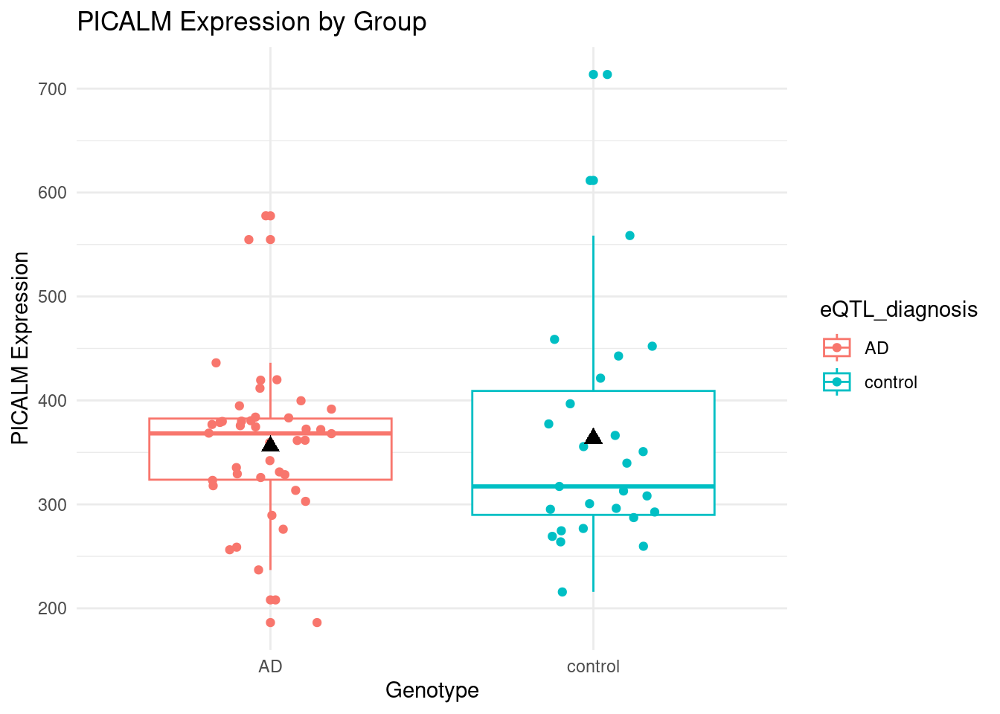
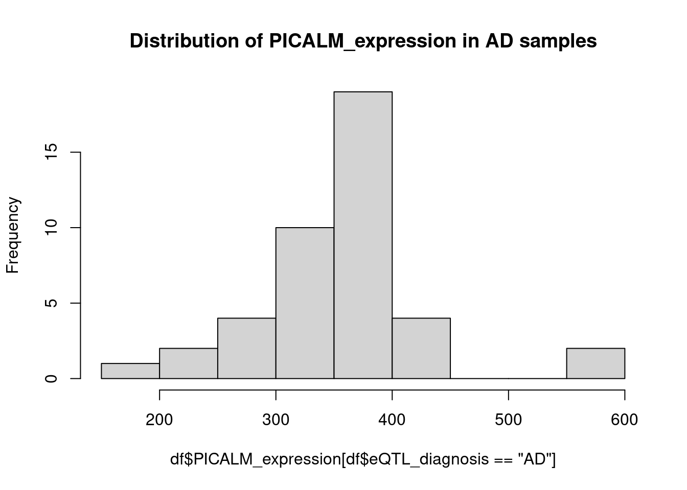
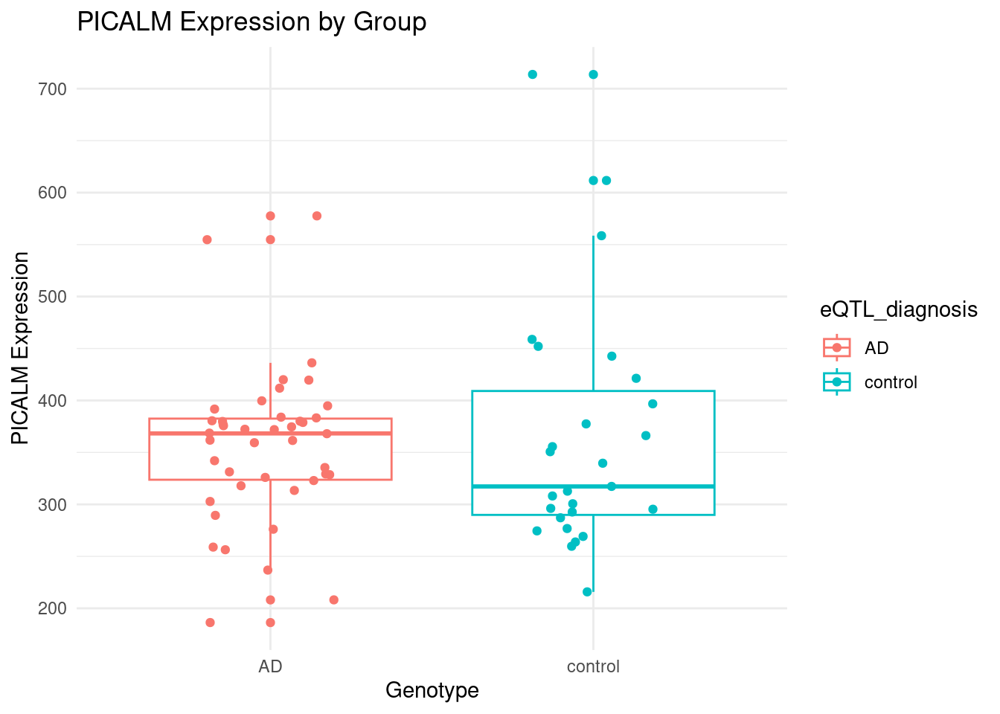
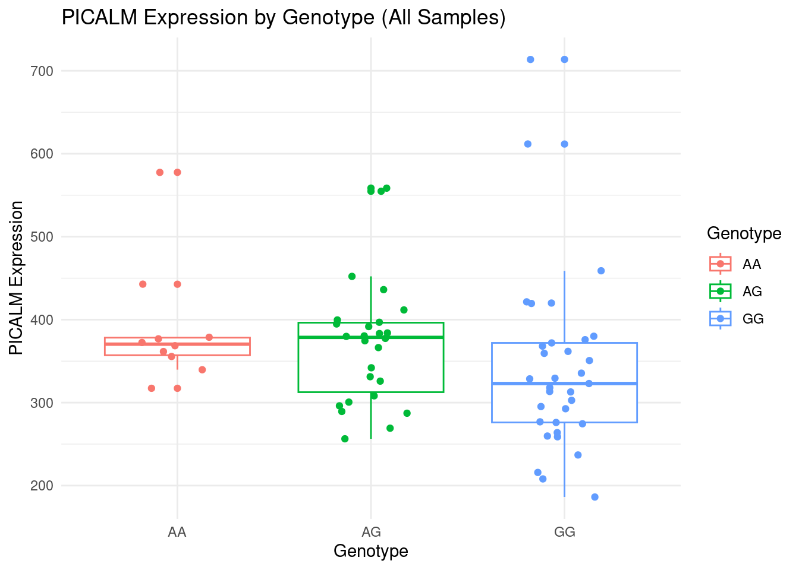
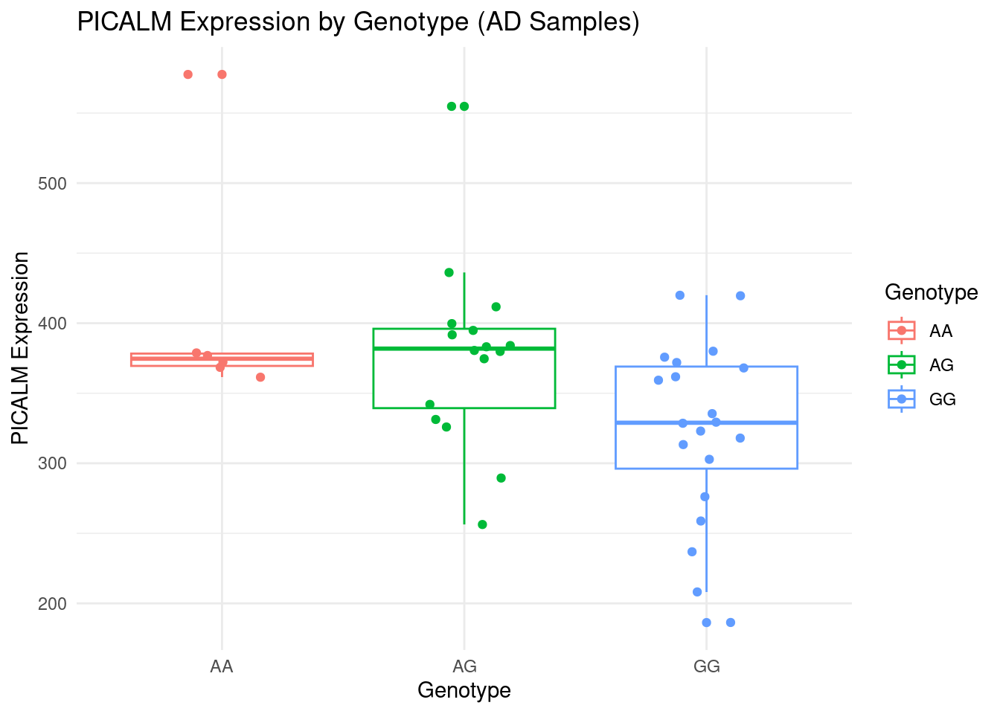
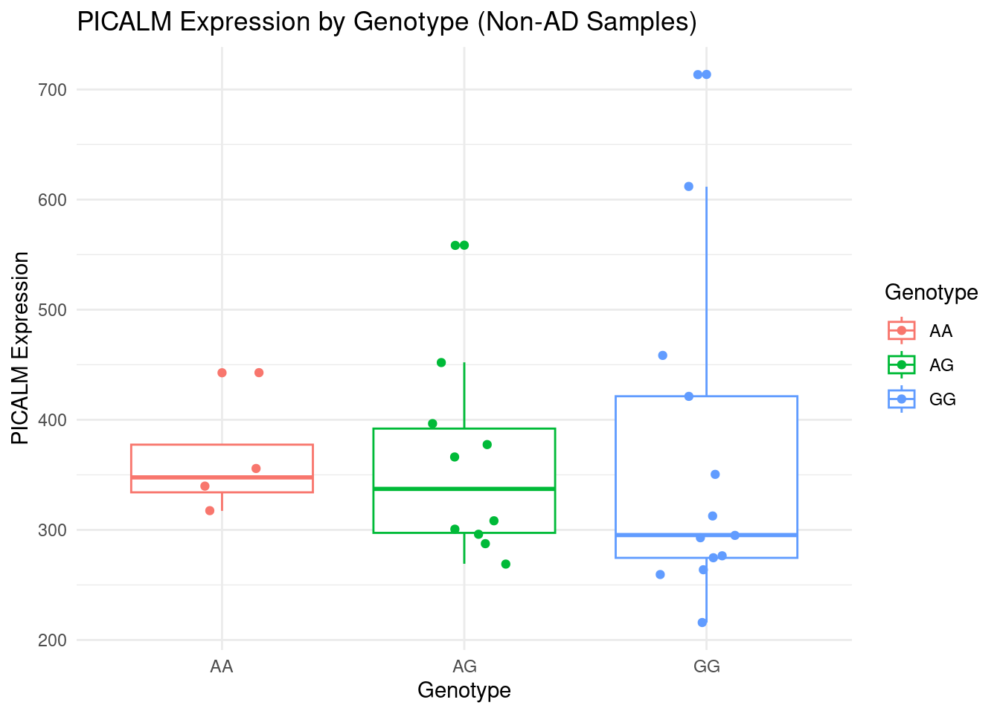

Last updated: 2024-06-28
Checks: 6 1
Knit directory: PICALM/
This reproducible R Markdown analysis was created with workflowr (version 1.7.0). The Checks tab describes the reproducibility checks that were applied when the results were created. The Past versions tab lists the development history.
The R Markdown file has unstaged changes. To know which version of
the R Markdown file created these results, you’ll want to first commit
it to the Git repo. If you’re still working on the analysis, you can
ignore this warning. When you’re finished, you can run
wflow_publish to commit the R Markdown file and build the
HTML.
Great job! The global environment was empty. Objects defined in the global environment can affect the analysis in your R Markdown file in unknown ways. For reproduciblity it’s best to always run the code in an empty environment.
The command set.seed(20240628) was run prior to running
the code in the R Markdown file. Setting a seed ensures that any results
that rely on randomness, e.g. subsampling or permutations, are
reproducible.
Great job! Recording the operating system, R version, and package versions is critical for reproducibility.
Nice! There were no cached chunks for this analysis, so you can be confident that you successfully produced the results during this run.
Great job! Using relative paths to the files within your workflowr project makes it easier to run your code on other machines.
Great! You are using Git for version control. Tracking code development and connecting the code version to the results is critical for reproducibility.
The results in this page were generated with repository version 4fbceb1. See the Past versions tab to see a history of the changes made to the R Markdown and HTML files.
Note that you need to be careful to ensure that all relevant files for
the analysis have been committed to Git prior to generating the results
(you can use wflow_publish or
wflow_git_commit). workflowr only checks the R Markdown
file, but you know if there are other scripts or data files that it
depends on. Below is the status of the Git repository when the results
were generated:
Unstaged changes:
Modified: analysis/geno_expr_cor.Rmd
Note that any generated files, e.g. HTML, png, CSS, etc., are not included in this status report because it is ok for generated content to have uncommitted changes.
These are the previous versions of the repository in which changes were
made to the R Markdown (analysis/geno_expr_cor.Rmd) and
HTML (docs/geno_expr_cor.html) files. If you’ve configured
a remote Git repository (see ?wflow_git_remote), click on
the hyperlinks in the table below to view the files as they were in that
past version.
| File | Version | Author | Date | Message |
|---|---|---|---|---|
| Rmd | fa92d8c | XSun | 2024-06-28 | update |
| Rmd | afc0221 | XSun | 2024-06-28 | update |
| html | afc0221 | XSun | 2024-06-28 | update |
library(ggplot2)
library(dplyr)We address the one of the comment from the reviewer here.
1.postmortem brain microglia AD vs. nonAD differential expression analysis of PICALM
df <- readxl::read_excel("/project2/xinhe/xsun/psych_analysis/2.review/PICALM_CPM_df_2_plot_AD_control_genotype_NG2022.xlsx",sheet=3)
colnames(df) <- c("sample","Diag","Genotype","eQTL_diagnosis","PICALM_expression","average_expr_group")
df <- df[,1:5]
df <- df %>%
mutate(G_dosage = case_when(
Genotype == "AA" ~ 0,
Genotype == "AG" ~ 1,
Genotype == "GG" ~ 2,
TRUE ~ NA_real_
))
DT::datatable(df,caption = htmltools::tags$caption( style = 'caption-side: left; text-align: left; color:black; font-size:150% ;','Individual level PICALM expression'),options = list(pageLength = 5) )eQTL_diagnosis column:The black triangle represents the mean value of expressions in each group
mean_values <- aggregate(PICALM_expression ~ eQTL_diagnosis, data = df, FUN = mean)
# Plot with mean values added
ggplot(df, aes(x = eQTL_diagnosis, y = PICALM_expression, color = eQTL_diagnosis)) +
geom_boxplot() +
geom_jitter(width = 0.2) +
geom_point(data = mean_values, aes(x = eQTL_diagnosis, y = PICALM_expression),
color = "black", size = 3, shape = 17) + # Add mean points
ggtitle("PICALM Expression by Group") +
xlab("Genotype") +
ylab("PICALM Expression") +
theme_minimal()
hist(df$PICALM_expression[df$eQTL_diagnosis =="AD"], main = "Distribution of PICALM_expression in AD samples")
the significance can be assessed by
t_test_result <- t.test(PICALM_expression ~ eQTL_diagnosis, data = df)
print(t_test_result)
Welch Two Sample t-test
data: PICALM_expression by eQTL_diagnosis
t = -0.30786, df = 39.566, p-value = 0.7598
alternative hypothesis: true difference in means between group AD and group control is not equal to 0
95 percent confidence interval:
-58.34252 42.92267
sample estimates:
mean in group AD mean in group control
355.824 363.534 ggplot(df, aes(x = eQTL_diagnosis, y = PICALM_expression, color = eQTL_diagnosis)) +
geom_boxplot() +
geom_jitter(width = 0.2) +
ggtitle("PICALM Expression by Group") +
xlab("Genotype") +
ylab("PICALM Expression") +
theme_minimal()
anova_result <- aov(PICALM_expression ~ eQTL_diagnosis, data = df)
summary(anova_result) Df Sum Sq Mean Sq F value Pr(>F)
eQTL_diagnosis 1 977 977 0.114 0.736
Residuals 67 572177 8540 we tested PICALM_expression ~ eQTL_diagnosis
model <- lm(PICALM_expression ~ eQTL_diagnosis, data = df)
summary(model)
Call:
lm(formula = PICALM_expression ~ eQTL_diagnosis, data = df)
Residuals:
Min 1Q Median 3Q Max
-169.55 -62.95 2.73 28.18 350.12
Coefficients:
Estimate Std. Error t value Pr(>|t|)
(Intercept) 355.82 14.26 24.954 <2e-16 ***
eQTL_diagnosiscontrol 7.71 22.80 0.338 0.736
---
Signif. codes: 0 '***' 0.001 '**' 0.01 '*' 0.05 '.' 0.1 ' ' 1
Residual standard error: 92.41 on 67 degrees of freedom
Multiple R-squared: 0.001704, Adjusted R-squared: -0.0132
F-statistic: 0.1144 on 1 and 67 DF, p-value: 0.7363The Mann-Whitney U test compares the median values of two independent groups. It assesses whether values in one group tend to be larger or smaller than values in another group.
wilcox.test(PICALM_expression ~ eQTL_diagnosis, data = df)
Wilcoxon rank sum exact test
data: PICALM_expression by eQTL_diagnosis
W = 631, p-value = 0.4375
alternative hypothesis: true location shift is not equal to 0eQTL_diagnosis column:For each group (all samples, AD, and nonAD), the correlation between PICALM expression and genotype was calculated using
df_ad <- df %>% dplyr::filter(eQTL_diagnosis == "AD")
df_nonad <- df %>% dplyr::filter(eQTL_diagnosis != "AD")
print("The group for all samples")[1] "The group for all samples"model_all <- lm(PICALM_expression ~ G_dosage, data = df)
summary(model_all)
Call:
lm(formula = PICALM_expression ~ G_dosage, data = df)
Residuals:
Min 1Q Median 3Q Max
-155.13 -59.41 -14.93 29.29 372.24
Coefficients:
Estimate Std. Error t value Pr(>|t|)
(Intercept) 393.70 23.04 17.084 <2e-16 ***
G_dosage -26.14 15.23 -1.717 0.0907 .
---
Signif. codes: 0 '***' 0.001 '**' 0.01 '*' 0.05 '.' 0.1 ' ' 1
Residual standard error: 90.52 on 67 degrees of freedom
Multiple R-squared: 0.04213, Adjusted R-squared: 0.02783
F-statistic: 2.947 on 1 and 67 DF, p-value: 0.09066sprintf("the p-value is %s", round(summary(model_all)$coefficients[2,4], digits = 4))[1] "the p-value is 0.0907"print("The group for AD samples")[1] "The group for AD samples"model_ad <- lm(PICALM_expression ~ G_dosage, data = df_ad)
summary(model_ad)
Call:
lm(formula = PICALM_expression ~ G_dosage, data = df_ad)
Residuals:
Min 1Q Median 3Q Max
-140.042 -41.684 3.503 34.809 184.194
Coefficients:
Estimate Std. Error t value Pr(>|t|)
(Intercept) 414.83 22.01 18.85 < 2e-16 ***
G_dosage -44.26 14.56 -3.04 0.00416 **
---
Signif. codes: 0 '***' 0.001 '**' 0.01 '*' 0.05 '.' 0.1 ' ' 1
Residual standard error: 67.25 on 40 degrees of freedom
Multiple R-squared: 0.1876, Adjusted R-squared: 0.1673
F-statistic: 9.24 on 1 and 40 DF, p-value: 0.004163sprintf("the p-value is %s", round(summary(model_ad)$coefficients[2,4], digits = 4))[1] "the p-value is 0.0042"print("The group for non-AD samples")[1] "The group for non-AD samples"model_nonad <- lm(PICALM_expression ~ G_dosage, data = df_nonad)
summary(model_nonad)
Call:
lm(formula = PICALM_expression ~ G_dosage, data = df_nonad)
Residuals:
Min 1Q Median 3Q Max
-148.71 -73.89 -44.32 45.33 349.15
Coefficients:
Estimate Std. Error t value Pr(>|t|)
(Intercept) 361.589 47.884 7.551 6.62e-08 ***
G_dosage 1.459 31.600 0.046 0.964
---
Signif. codes: 0 '***' 0.001 '**' 0.01 '*' 0.05 '.' 0.1 ' ' 1
Residual standard error: 118.2 on 25 degrees of freedom
Multiple R-squared: 8.522e-05, Adjusted R-squared: -0.03991
F-statistic: 0.002131 on 1 and 25 DF, p-value: 0.9635sprintf("the p-value is %s", round(summary(model_nonad)$coefficients[2,4], digits = 4))[1] "the p-value is 0.9635"# Convert G_dosage back to factor for plotting
df <- df %>% mutate(Genotype = factor(G_dosage, levels = c(0, 1, 2), labels = c("AA", "AG", "GG")))
df_ad <- df_ad %>% mutate(Genotype = factor(G_dosage, levels = c(0, 1, 2), labels = c("AA", "AG", "GG")))
df_nonad <- df_nonad %>% mutate(Genotype = factor(G_dosage, levels = c(0, 1, 2), labels = c("AA", "AG", "GG")))
# Plot for all samples
ggplot(df, aes(x = Genotype, y = PICALM_expression, color = Genotype)) +
geom_boxplot() +
geom_jitter(width = 0.2) +
ggtitle("PICALM Expression by Genotype (All Samples)") +
xlab("Genotype") +
ylab("PICALM Expression")+
theme_minimal()
# Plot for AD samples
ggplot(df_ad, aes(x = Genotype, y = PICALM_expression, color = Genotype)) +
geom_boxplot() +
geom_jitter(width = 0.2) +
ggtitle("PICALM Expression by Genotype (AD Samples)") +
xlab("Genotype") +
ylab("PICALM Expression")+
theme_minimal()
# Plot for non-AD samples
ggplot(df_nonad, aes(x = Genotype, y = PICALM_expression, color = Genotype)) +
geom_boxplot() +
geom_jitter(width = 0.2) +
ggtitle("PICALM Expression by Genotype (Non-AD Samples)") +
xlab("Genotype") +
ylab("PICALM Expression") +
theme_minimal()
sessionInfo()R version 4.2.0 (2022-04-22)
Platform: x86_64-pc-linux-gnu (64-bit)
Running under: CentOS Linux 7 (Core)
Matrix products: default
BLAS/LAPACK: /software/openblas-0.3.13-el7-x86_64/lib/libopenblas_haswellp-r0.3.13.so
locale:
[1] C
attached base packages:
[1] stats graphics grDevices utils datasets methods base
other attached packages:
[1] dplyr_1.1.4 ggplot2_3.5.1
loaded via a namespace (and not attached):
[1] Rcpp_1.0.12 highr_0.9 cellranger_1.1.0 pillar_1.9.0
[5] compiler_4.2.0 bslib_0.3.1 later_1.3.0 jquerylib_0.1.4
[9] git2r_0.30.1 workflowr_1.7.0 tools_4.2.0 digest_0.6.29
[13] jsonlite_1.8.0 evaluate_0.15 lifecycle_1.0.4 tibble_3.2.1
[17] gtable_0.3.0 pkgconfig_2.0.3 rlang_1.1.2 cli_3.6.1
[21] rstudioapi_0.13 crosstalk_1.2.0 yaml_2.3.5 xfun_0.41
[25] fastmap_1.1.0 withr_2.5.0 stringr_1.5.1 knitr_1.39
[29] htmlwidgets_1.5.4 generics_0.1.2 fs_1.5.2 vctrs_0.6.5
[33] sass_0.4.1 DT_0.22 tidyselect_1.2.0 rprojroot_2.0.3
[37] grid_4.2.0 glue_1.6.2 R6_2.5.1 fansi_1.0.3
[41] readxl_1.4.0 rmarkdown_2.25 farver_2.1.0 magrittr_2.0.3
[45] whisker_0.4 scales_1.3.0 promises_1.2.0.1 htmltools_0.5.2
[49] colorspace_2.0-3 httpuv_1.6.5 labeling_0.4.2 utf8_1.2.2
[53] stringi_1.7.6 munsell_0.5.0